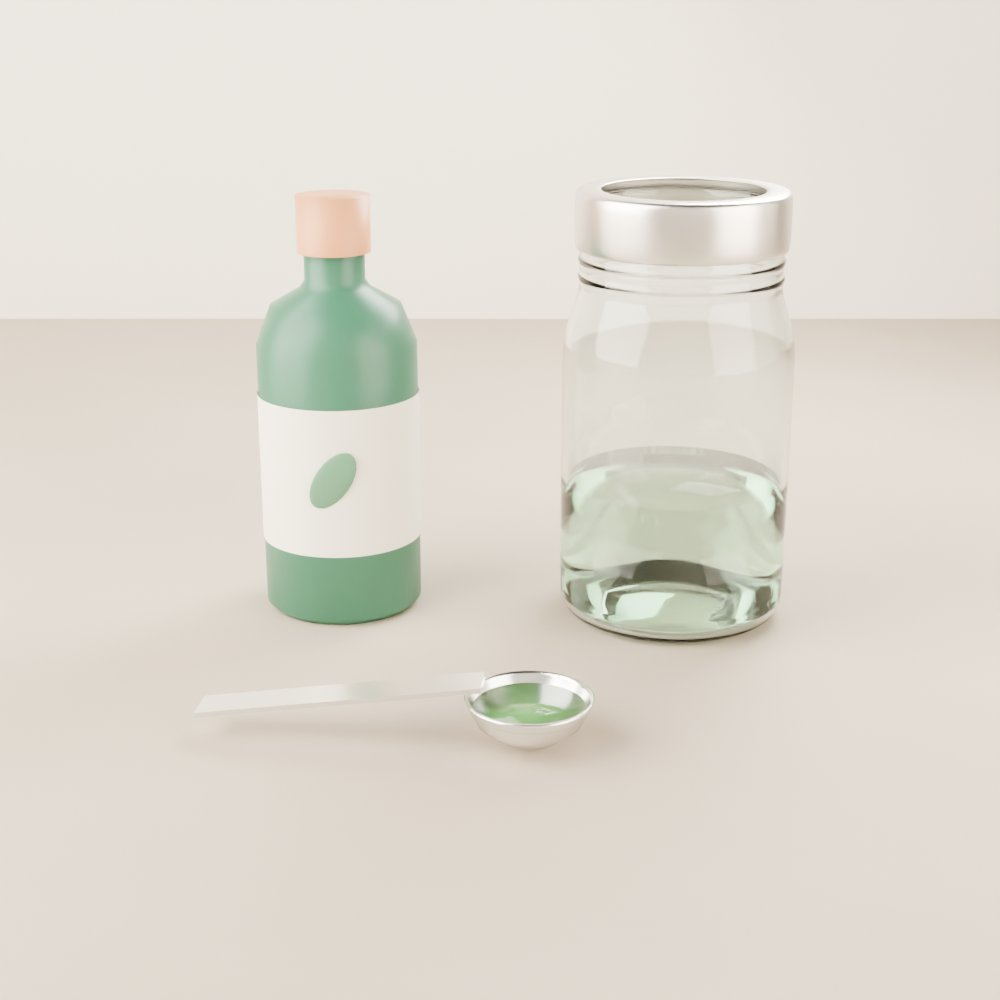

Beginner guide · Plant food
Plant food, made simple.
In soil, plants find some food on their own. In water, everything they eat comes from what you mix in. Here's what to buy, how to mix it, and how strong to make it.

01 The idea
What plants eat
Plants make their energy from light, but they also need minerals to build leaves, roots, and fruit. The big three are nitrogen (for leaves), phosphorus (for roots and flowers), and potassium (for overall health). They also need smaller amounts of things like calcium, magnesium, and iron.
That's why the method matters:
- Water methods (jars, bubble buckets): use hydroponic nutrients. They contain everything, including the small extras that regular fertiliser leaves out because soil normally provides them.
- Pots of soil: a regular liquid fertiliser for houseplants or vegetables is fine. Fresh potting mix often has enough food for the first month.
- Microgreens: no plant food needed. The seed carries all the food they use before you harvest.
02 What to buy
One part, two parts, or three?
Hydroponic nutrients come in a few forms. They all work. The difference is how many bottles or bags you mix.
| Type | What it is | Good for |
|---|---|---|
| One-part | A single bottle or powder. | Beginners. The easiest to get right. |
| Two-part (A and B) | Two bottles you add one after the other. | Most hydroponic growers. Very common for leafy greens. |
| Three-part | Usually "grow", "micro", and "bloom". | Fine-tuning for fruiting plants like tomatoes. |
Look for one labelled for hydroponics and for leafy greens to start. "Organic" liquid feeds made for soil tend to go cloudy and smelly in water, so save those for pots.
03 Method
How to mix it
-
Start with the water
Fill your jar, bucket, or a clean jug with room-temperature water first. Always add plant food to water, never water to plant food.
-
Measure carefully
Use the amount on the label for your plant and your water. A measuring syringe or measuring spoons make small amounts easy. Labels are often "per gallon", so the cheat sheet below helps.
-
Add one part at a time
With a two-part or three-part feed, add part A, stir well, then add part B and stir again. Never pour the parts straight into each other. Undiluted, they react and form clumps the plant can't use.
-
Then check the pH
Plant food changes the pH, so test after mixing, not before. Our pH guide shows how.
-
Label leftovers
Mixed plant food keeps a week or two in a closed, dark jug. Write what it is and the date on the jug.
| Cheat sheet | Metric | Imperial |
|---|---|---|
| A wide-mouth mason jar | about 1 litre | about 1 quart (¼ US gallon) |
| A big jug | about 4 litres | about 1 US gallon |
| A bubble bucket | about 19 litres | about 5 US gallons |
| 1 teaspoon | about 5 mL | 1 tsp |
| 1 tablespoon | about 15 mL | 1 tbsp (3 tsp) |
Example: a label that says 10 mL (2 tsp) per gallon works out to about 2.5 mL (½ tsp) for a 1 litre (1 quart) jar.
04 How strong
Full strength, half strength, quarter strength
"Full strength" means the amount on the label. Young plants have small roots and burn easily, so they get less.
Got an EC meter? It's optional, but it measures how much food is in the water. EC is shown in mS/cm. Rough targets: seedlings 0.5 to 0.8, leafy greens 0.8 to 1.5, herbs 1.0 to 1.6, tomatoes and peppers 2.0 to 3.0. Some meters show "ppm" instead, which uses different scales from brand to brand, so EC is easier to compare.
05 Keeping it going
When to add more or change it
| Way to grow | What to do |
|---|---|
| Water jars | Mix once at the start. If the jar gets very low before harvest, add a little more mixed plant food, but only to about halfway, to keep the air gap. |
| Bubble buckets | Top up with plain water as the plant drinks. Every 2 weeks or so, empty the bucket and refill with fresh mixed plant food. |
| Pots of soil | After about a month, feed every 2 weeks or so at half strength. Water with plain water in between. |
| Microgreens | Nothing. Plain water is all they need. |
- Store it safely. Keep plant food and pH up and down sealed, labelled, and out of reach of kids and pets. Don't store mixed plant food in drink bottles, and wash your hands after handling the concentrates.
06 Troubleshooting
If something looks wrong
- Older, lower leaves turning pale or yellow
- Often hungry. Check the pH first, then check you used the label amount. In a bucket, it may be time for fresh plant food.
- Brown, crispy leaf tips
- Often too strong. Next time, mix a bit weaker. In a bucket, top up with plain water.
- New leaves yellow between the veins
- Usually the pH is off and the plant can't take up iron. Check and fix the pH before adding anything.
- White crust on the cube or net cup
- Dried minerals from the plant food. It's harmless. Wipe it off if you like.
- Cloudy or smelly water
- Something is growing in it. Swap in fresh mixed plant food, clean the container, and make sure no light gets in.
Not sure about your mix?
Join the Root Collective and ask. Post your plant food, your amounts, and a photo, and someone can help you work it out.
Join us, it's free